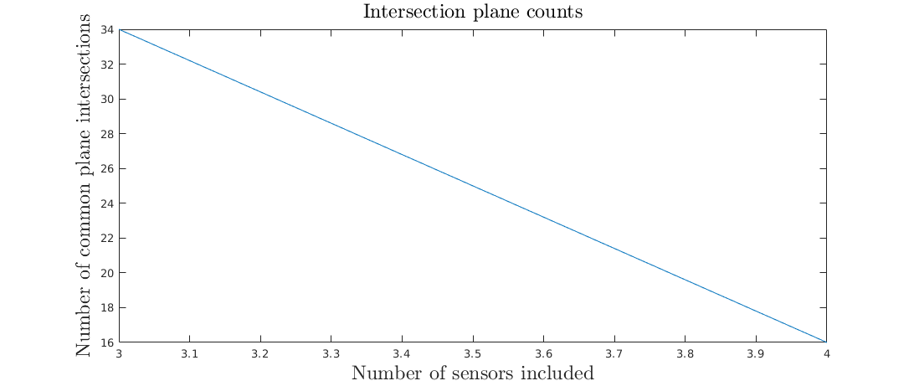

Contents
clear; close all;
C = 299.792458;
F0 = 31;
lambda0=C/F0;
xy = [...
0, 2;...
0, -2.5;...
-2, 0;...
2.5, 0;...
0, 0];
xpos = zeros(size(xy,1),1)*lambda0;
ypos = zeros(size(xy,1),1)*lambda0;
zpos = zeros(size(xy,1),1)*lambda0;
c0 = 2.99792e8;
TEST BY GENERATING A PERFECT SYMMETRIC ARRAY
MP_tol = 1e-1
gain_yagi = 7.24;
gain_yagi_base = 10^(gain_yagi/10);
axis_font_size = 18;
title_font_size = 16;
legend_font_size = 14;
xant = xpos/lambda0;
yant = ypos/lambda0;
Zn = size(zpos,2);
Sn = size(zpos,1);
Sn = Sn - 1;
r=zeros(3,Zn,Sn);
R=zeros(3,Sn);
R(:,:) = [xy(1:Sn,1).'; xy(1:Sn,2).'; (xy(1:Sn,1).')*0];
for i=1:Sn
r(:,:,i) = [xpos(i,:); ypos(i,:); zpos(i,:)]./lambda0;
end
rho=zeros(3,Zn,Sn);
for i=1:Sn
rho(:,:,i) = r(:,:,i) - repmat(R(:,i),1,Zn);
end
k=@(th,ph) [cos(th).*sin(ph); sin(th).*sin(ph); cos(ph)];
K = zeros(Sn,1);
for i=1:Sn
Rni = norm(R(:,i));
K(i) = R(1,i)^2/Rni + R(2,i)^2/Rni + R(3,i)^2/Rni;
end
n0 = floor(2*K);
k_length = 2*n0+1;
r_jk =@(j,k) (n0(j)+1-k)/K(j);
p0_jk =@(j,k) [r_jk(j,k)*R(1,j)/norm(R(:,j)); r_jk(j,k)*R(2,j)/norm(R(:,j)); r_jk(j,k)*R(3,j)/norm(R(:,j))];
nvec_j = @(j) R(:,j)./norm(R(:,j));
I_j =@(j,x,y,z) R(1,j)*x + R(2,j)*y + R(3,j)*z;
PERMS_n = prod(k_length(1:3));
PERMS_J = zeros(PERMS_n,3);
cnt = 0;
for i1=1:k_length(1)
for i2=1:k_length(2)
for i3=1:k_length(3)
cnt = cnt + 1;
PERMS_J(cnt,:) = [i1,i2,i3];
end
end
end
fprintf('First intersection calculation: %i permutations of 3 planes\n',PERMS_n);
I = [1,2,3];
pinv_norm = zeros(PERMS_n,1);
intersection_line = zeros(3,PERMS_n);
parfor j=1:PERMS_n
J = PERMS_J(j,:);
W_matrix = zeros(length(I),3);
b_vector = zeros(length(I),1);
for i=1:length(I)
W_matrix(i,:) = nvec_j(I(i)).';
b_vector(i) = -dot(nvec_j(I(i)),p0_jk(I(i),J(i)));
end
Moore_Penrose_solution_check = W_matrix*pinv( W_matrix )*b_vector - b_vector;
intersection_line(:,j) = pinv( W_matrix )*b_vector;
pinv_norm(j) = norm(Moore_Penrose_solution_check);
end
intersection_line_norm = sqrt(sum(intersection_line.^2,1)).';
intersections3_inds = find(pinv_norm < MP_tol & intersection_line_norm <= 2 & intersection_line_norm ~= 0);
intersections3_n = length(intersections3_inds)
intersections3 = PERMS_J(intersections3_inds,:);
SURVIVORS = zeros(Sn-2,1);
SURVIVORS(1) = intersections3_n;
intersections_n = intersections3_n;
intersections_inds = intersections3_inds;
intersections = PERMS_J(intersections_inds,:);
intersections_integers = R.'*intersection_line(:,intersections_inds.');
for ii=4:Sn
PERMS_J_base = PERMS_J;
PERMS_n = intersections_n*k_length(ii);
fprintf('Starting plane intersections for new sensor %i of %i with %i permutations on %i remaining solutions\n',ii,Sn,PERMS_n, intersections_n);
PERMS_J = zeros(PERMS_n,ii);
cnt = 0;
for iperm=1:intersections_n
for i_add=1:k_length(ii)
cnt = cnt + 1;
PERMS_J(cnt,:) = [PERMS_J_base(intersections_inds(iperm),:), i_add];
end
end
I = [1:ii];
pinv_norm = zeros(PERMS_n,1);
intersection_line = zeros(3,PERMS_n);
parfor j=1:PERMS_n
J = PERMS_J(j,:);
W_matrix = zeros(length(I),3);
b_vector = zeros(length(I),1);
for i=1:length(I)
W_matrix(i,:) = nvec_j(I(i)).';
b_vector(i) = -dot(nvec_j(I(i)),p0_jk(I(i),J(i)));
end
Moore_Penrose_solution_check = W_matrix*pinv( W_matrix )*b_vector - b_vector;
intersection_line(:,j) = pinv( W_matrix )*b_vector;
pinv_norm(j) = norm(Moore_Penrose_solution_check);
end
intersections_inds = find(pinv_norm < MP_tol);
intersections_n = length(intersections_inds);
intersections = PERMS_J(intersections_inds,:);
intersections_integers = R.'*intersection_line(:,intersections_inds.');
SURVIVORS(ii-2) = intersections_n;
end
intersections__last = intersections_n
intersections_integers_complete = [zeros(1,size(intersections_integers,2)); intersections_integers];
ambiguity_distances_INT_FORM_MAT = abs(intersections_integers_complete - round(intersections_integers_complete));
ambiguity_distances_INT_FORM_mean = mean(ambiguity_distances_INT_FORM_MAT,1)
ambiguity_distances_WAVE_FORM_MAT = exp(1i*2*pi*intersections_integers_complete) - exp(1i*2*pi*round(intersections_integers_complete));
ambiguity_distances_WAVE_FORM = sqrt(sum(ambiguity_distances_WAVE_FORM_MAT.*conj(ambiguity_distances_WAVE_FORM_MAT),1))
fign = 0;
el0 = 50;
az0 = 270;
k0x = sind(az0)*cosd(el0);
k0y = cosd(az0)*cosd(el0);
k0z = sind(el0);
k0 = [k0x; k0y; k0z];
cutoff_ph_ang = 90*pi/180;
cap_intersections_of_slines = repmat([k0x; k0y],1,length(intersections_inds)) - intersection_line(1:2,intersections_inds);
cap_intersections_of_slines = sqrt(sum(cap_intersections_of_slines.^2,1));
cap_intersections_of_slines = cap_intersections_of_slines <= sin(cutoff_ph_ang);
cap_intersections_of_slines = find(cap_intersections_of_slines);
s_sel = intersection_line(1:3,intersections_inds(cap_intersections_of_slines));
k_finds = zeros(size(s_sel));
k_finds(1:2,:) = repmat([k0x; k0y],1,size(s_sel,2)) - s_sel(1:2,:);
k_finds(3,:) = sqrt(1- k_finds(1,:).^2 - k_finds(2,:).^2 );
SUBGROUP_signal=@(k) exp ( -1i*2*pi*( xy(:,1)*k(1) +...
xy(:,2)*k(2) ) );
ambiguity_distances_EXPLICIT = zeros(1,size(k_finds,2));
ambiguity_normal_EXPLICIT = zeros(size(xy,1),size(k_finds,2));
for i = 1:size(k_finds,2)
ambiguity_distances_EXPLICIT(1,i) = norm(SUBGROUP_signal(k0) - SUBGROUP_signal(k_finds(:,i)));
ambiguity_normal_EXPLICIT(:,i) = (SUBGROUP_signal(k0) - SUBGROUP_signal(k_finds(:,i)))/ambiguity_distances_EXPLICIT(1,i);
end
ambiguity_distances_EXPLICIT
ambiguity_normal_EXPLICIT
tick_font_size = 18;
fign = fign + 1; figure(fign); clf;
subplot(1,1,1);
hold on
h = plot(xy(:,1)*lambda0,xy(:,2)*lambda0, 'ob');
for i=1:(size(xy,1))
plot(xant(i,:)*lambda0, yant(i,:)*lambda0, '*','color',[.8,.6,.6]);
if size(yant,2) > 1
K = convhull(xant(i,:)*lambda0, yant(i,:)*lambda0);
plot(xant(i,K)*lambda0, yant(i,K)*lambda0, '-k');
end
end
hold off
lh = legend('Sensor position','Subgroup antennas');
xh = xlabel('x [m]');
yh = ylabel('y [m]');
th = title('MU-radar sensor configuration');
set([xh,yh,th,lh],'Interpreter','latex','fontsize',axis_font_size+8)
axis equal
ax = ancestor(h, 'axes');
ax.XAxis.FontSize = tick_font_size;
ax.YAxis.FontSize = tick_font_size;
fign = fign + 1; figure(fign); clf;
plot(xant', yant', '*','color',[.8,.6,.6]);
hold on
plot(xy(:,1),xy(:,2), 'ob');
hold off
axis('equal')
fign = fign + 1; figure(fign); clf;
plot(xy(:,1),xy(:,2), 'o');
axis('equal')
fign = fign + 1; figure(fign); clf;
set( gcf, 'Color', 'White', 'Unit', 'Normalized', ...
'Position', [0.1,0.1,0.8,0.6] ) ;
axes( 'Position', [0, 0.95, 1, 0.05] ) ;
set( gca, 'Color', 'None', 'XColor', 'White', 'YColor', 'White' ) ;
subplot(1,1,1);
plot(3:Sn,SURVIVORS)
xh = xlabel('Number of sensors included');
yh = ylabel('Number of common plane intersections');
th = title('Intersection plane counts');
set([xh,yh,th],'Interpreter','latex','fontsize',axis_font_size)
fign = fign + 1; figure(fign); clf;
set( gcf, 'Color', 'White', 'Unit', 'Normalized', ...
'Position', [0.1,0.1,0.8,0.6] ) ;
axes( 'Position', [0, 0.95, 1, 0.05] ) ;
set( gca, 'Color', 'None', 'XColor', 'White', 'YColor', 'White' ) ;
subplot(1,1,1);
plot(intersection_line(1,intersections_inds),intersection_line(2,intersections_inds),'.b')
xh = xlabel('$s_{x}$ [1]');
yh = ylabel('$s_{y}$ [1]');
th = title('Intersection lines');
axis([-2,2,-2,2])
set([xh,yh,th],'Interpreter','latex','fontsize',axis_font_size)
fign = fign + 1; figure(fign); clf;
set( gcf, 'Color', 'White', 'Unit', 'Normalized', ...
'Position', [0.1,0.1,0.8,0.6] ) ;
axes( 'Position', [0, 0.95, 1, 0.05] ) ;
set( gca, 'Color', 'None', 'XColor', 'White', 'YColor', 'White' ) ;
subplot(1,1,1);
hold on
for S_ind = 1:length(intersections_inds)
fprintf('Starting Sind %i of %i\n',S_ind,length(intersections_inds));
s_point = intersection_line(:,intersections_inds(S_ind));
s_line = repmat(s_point,1,100);
s_line(3,:) = linspace(-sqrt(4-dot(s_point,s_point)),sqrt(4-dot(s_point,s_point)),100);
if S_ind == 25
plot3(s_line(1,:),s_line(2,:),s_line(3,:),'.r')
else
h = plot3(s_line(1,:),s_line(2,:),s_line(3,:),'.b');
end
end
hold off
xh = xlabel('$s_{x}$ [1]');
yh = ylabel('$s_{y}$ [1]');
zh = zlabel('$s_{z}$ [1]');
th = title('Solution set $\Omega$');
axis([-2,2,-2,2])
view([-143,53])
set([th],'Interpreter','latex','fontsize',axis_font_size+6)
set([xh,yh,zh],'Interpreter','latex','fontsize',axis_font_size+12)
ax = ancestor(h, 'axes');
ax.XAxis.FontSize = 19;
ax.YAxis.FontSize = 19;
ax.ZAxis.FontSize = 19;
fign = fign + 1; figure(fign); clf;
set( gcf, 'Color', 'White', 'Unit', 'Normalized', ...
'Position', [0.1,0.1,0.8,0.6] ) ;
axes( 'Position', [0, 0.95, 1, 0.05] ) ;
set( gca, 'Color', 'None', 'XColor', 'White', 'YColor', 'White' ) ;
subplot(1,1,1);
hold on
for S_ind = 1:length(intersections_inds)
s_point = intersection_line(:,intersections_inds(S_ind));
plot(s_point(1),s_point(2),'.b')
text(s_point(1)+0.1,s_point(2),sprintf('%.2f',ambiguity_distances_WAVE_FORM(S_ind)));
end
hold off
xh = xlabel('$s_{x}$ [1]');
yh = ylabel('$s_{y}$ [1]');
th = title('Solution set $\Omega$');
axis([-2,2,-2,2])
set([xh,yh,th],'Interpreter','latex','fontsize',axis_font_size)
circ_cutoff_ph_ang_x = sin(cutoff_ph_ang)*cos(linspace(0,2*pi,100));
circ_cutoff_ph_ang_y = sin(cutoff_ph_ang)*sin(linspace(0,2*pi,100));
fign = fign + 1; figure(fign); clf;
set( gcf, 'Color', 'White', 'Unit', 'Normalized', ...
'Position', [0.1,0.1,0.8,0.6] ) ;
axes( 'Position', [0, 0.95, 1, 0.05] ) ;
set( gca, 'Color', 'None', 'XColor', 'White', 'YColor', 'White' ) ;
subplot(1,2,1);
hold on
for S_ind = 1:length(intersections_inds)
s_point = intersection_line(:,intersections_inds(S_ind));
plot(s_point(1),s_point(2),'.b')
text(s_point(1)+0.1,s_point(2),sprintf('%.2f',ambiguity_distances_WAVE_FORM(S_ind)));
end
plot(k0x,k0y,'or')
plot(circ_cutoff_ph_ang_x ,circ_cutoff_ph_ang_y,'-r')
hold off
xh = xlabel('$s_{x}$ [1]');
yh = ylabel('$s_{y}$ [1]');
th = title('Solution set $\Omega$');
axis([-2,2,-2,2])
set([xh,yh,th],'Interpreter','latex','fontsize',axis_font_size)
subplot(1,2,2);
hold on
plot(k0x,k0y,'or')
for i = 1:size(k_finds,2)
plot(k_finds(1,i),k_finds(2,i),'.b')
text(k_finds(1,i)+0.1,k_finds(2,i),sprintf('%.2f',ambiguity_distances_EXPLICIT(i)));
end
hold off
xh = xlabel('$k_{x}$ [1]');
yh = ylabel('$k_{y}$ [1]');
th = title('Explicit ambiguities $\Omega(\mathbf{k})$');
axis([-1,1,-1,1])
set([xh,yh,th],'Interpreter','latex','fontsize',axis_font_size)
MP_tol =
0.1000
First intersection calculation: 891 permutations of 3 planes
Starting parallel pool (parpool) using the 'local' profile ...
connected to 4 workers.
intersections3_n =
34
Starting plane intersections for new sensor 4 of 4 with 374 permutations on 34 remaining solutions
intersections__last =
16
ambiguity_distances_INT_FORM_mean =
Columns 1 through 7
0.0000 0.0450 0.0900 0.0450 0.0900 0.0000 0.0450
Columns 8 through 14
0.0450 0.0450 0.0450 0.0000 0.0900 0.0450 0.0900
Columns 15 through 16
0.0450 0.0000
ambiguity_distances_WAVE_FORM =
Columns 1 through 7
0.0000 0.9837 1.3912 0.9837 1.3912 0.0000 0.9837
Columns 8 through 14
0.9837 0.9837 0.9837 0.0000 1.3912 0.9837 1.3912
Columns 15 through 16
0.9837 0.0000
ambiguity_distances_EXPLICIT =
0.9837 1.3912 0.9837 0.9837 0.9837 1.3912
ambiguity_normal_EXPLICIT =
Columns 1 through 4
0.1941 - 0.5975i 0.1373 - 0.4225i 0.0000 - 0.0000i 0.0000 - 0.0000i
0.2977 - 0.7188i 0.2105 - 0.5083i 0.0000 + 0.0000i 0.0000 + 0.0000i
0.0000 + 0.0000i 0.3816 - 0.2275i 0.5396 - 0.3218i -0.6257 - 0.0569i
0.0000 + 0.0000i 0.1517 - 0.5288i 0.2146 - 0.7478i -0.6805 + 0.3771i
0.0000 + 0.0000i 0.0000 + 0.0000i 0.0000 + 0.0000i 0.0000 + 0.0000i
Columns 5 through 6
0.1941 + 0.5975i 0.1373 + 0.4225i
0.2977 + 0.7188i 0.2105 + 0.5083i
0.0000 + 0.0000i 0.3816 - 0.2275i
0.0000 + 0.0000i 0.1517 - 0.5288i
0.0000 + 0.0000i 0.0000 + 0.0000i
Starting Sind 1 of 16
Warning: Imaginary parts of complex X, Y, and/or Z arguments ignored
Starting Sind 2 of 16
Starting Sind 3 of 16
Starting Sind 4 of 16
Starting Sind 5 of 16
Starting Sind 6 of 16
Starting Sind 7 of 16
Starting Sind 8 of 16
Starting Sind 9 of 16
Starting Sind 10 of 16
Starting Sind 11 of 16
Starting Sind 12 of 16
Starting Sind 13 of 16
Starting Sind 14 of 16
Starting Sind 15 of 16
Starting Sind 16 of 16
Warning: Imaginary parts of complex X, Y, and/or Z arguments ignored
